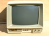
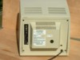
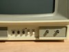
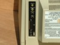
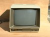
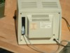
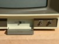
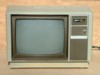
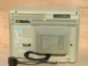

Zenith ZVM-13x Series
|

|
ZVM-13x Monitor Service Information
General Monitor Information:
Note: Zenith did not use model numbers chronologically, but rather by a unit's particular features, price range, etc. For example, the ZVM-134 was released in late 1982, while the ZVM-133 was released in the fall of 1984. The more expensive ZVM-134 did not have the IBM Intensity signal processing board that was included in the lesser expensive ZVM-133, though most other circuitry remained the same.
This paper will attempt to explain the differences in the ZVM-13x model series and give helpful troubleshooting and maintenance information for each. First a few general items of interest.
Cleaning, as recommended by the manufacturer:
Screen - Before cleaning the screen, turn the monitor off and give it time to cool. Then, wet a cloth in lukewarm water containing a little fabric softener or dishwashing detergent. Wring the cloth almost dry and then wipe the glass. Make sure that no drops of moisture are squeezed onto the glass. Do NOT wipe the glass dry. Let it air dry before you turn the monitor back on.
Cabinet - Use a soft cloth with a mild soap solution to clean the cabinet. Rinse the cloth with clear water before you wipe the cabinet dry. Be VERY careful to avoid getting water inside the monitor.
Note: These cabinets have gotten pretty grimy over the years, especially if stored for extended periods of time in garages or basements. To really clean a neglected monitor, it is best to remove the back panel (4 hex screws on all but the ZVM-134, which has 6 hex screws) and then, on all but the ZVM-134, remove the top cabinet by placing the monitor on its face on a soft towel and removing two long philips screws from the recessed holes in the bottom. Once the screws are removed, the cabinet pops apart by gently lifting the front edge away from the front faceplate. Wash and rinse the cabinet parts being careful not to get any labels wet. I've used 'Formula 409' successfully on typical greasy grime, but sometimes a scouring powder and brush are needed on really bad cabinets. With the cabinet top removed, you also have good access to the faceplate, screen and bottom for cleaning.
Video Problems:
If you have difficulty with the video produced by your monitor, check the following:
The Interconnecting Cable and Connections - Depending upon where you obtained your monitor, the cable may have been meant for use with another type of computer - not a Z-100! Check the cable pinout with an ohmmeter and compare it with the pinout given in the next section.
The Computer - The Z-100 normally uses negative horizontal and negative vertical synchronization signals. However, the Z-100 is capable of generating the positive signals needed by other monitors. Check that the jumpers on the video board (the board laying horizontally over the main board) for the correct settings. Check that they are also set to RGB (Color) while you are at it.
The Color Monitor - Particularly if it is a non-Zenith model. Monitors come in all varieties, especially those manufactured after the 1980's and I can't spend time here describing them all. Let's just leave it that most monitors are not RGB capable, or, if they are, may require positive sync signals instead of the negative sync signals normally available from the Z-100.
Hint: If the monitor has a display, but it is tearing horizontally or rolling vertically, you probably have a synchronization problem. Suspect the cabling, unless the monitor has worked for you in the past.
To determine which component is at fault, always recheck the obvious first:
1. Check the AC power source for the monitor and the computer to be sure both are on and connected.
2. Try moving the cable and connectors back and forth to check if there is an intermittent connection.
3. If another computer, cable, or monitor is available, try a substitution of one for the other.
4. Call or write me, Steve Vagts at 211 Sean Way, Hendersonville, NC 28792, (828) 685-8924, or email me at z100lifeline@earthlink.net with a description of the problem and symptoms. I'll be happy to help you.
5. For the most part, all the monitors in the ZVM-13x series use the same Main Board, and nearly all the tuning adjustments are made to this board. See the separate section on the "ZVM-13x Series Main Board Adjustments" toward the end of this document.
There were several different cables available from Zenith to cover all the possible combinations of monitors and computers that were available in the 1980's. These were:
ZVM-134-1: Terminated with a 9-pin DB connector for the computer and a 15-pin DB connector for the monitor, this cable was used with the Z-100 and Z-150 microcomputers to connect to the ZVM-134 color monitor. There was no Intensity signal.
Signal Definitions:
ZVM-134-1 Pin Layout: Click to enlarge; Right-click to save.
ZVM-134-2: Terminated with a 9-pin DB connector for the computer and a 15-pin DB connector for the monitor, this cable was used with the IBM-PC microcomputers to connect to the ZVM-134 color monitor. There was, however, no Intensity signal.
Signal Definitions: The same as for the previous ZVM-134-1 cable.
ZVM-134-2 Pin Layout: Click to enlarge; Right-click to save.
Note: For those that want to upgrade their ZVM-134 monitor to display 16 colors (that is, install an Intensity Signal), such a modification was described in the November-December 1986 edition of "Sextant". This modification, however, did require a RGB Gain Control Board, Zenith part number 9-356, which is no longer available, but may be found in a spare ZVM-133, or maybe the ZVM-136.
ZVM-134-3: Terminated with two 15-pin DB connectors, this cable was used with the Apple computer to connect with the ZVM-134 color monitor. Unfortunately, I have no information on the signal definitions, nor the pin layout.
ZVM-135-1: Terminated with a 9-pin DB connector for the computer and a 25-pin DB connector for the monitor, this cable was used with the Z-100 and Z-150 microcomputers to connect to the ZVM-131, ZVM-133, ZVM-135, and ZVM-136 color monitors. However, using this cable with the Z-150 or the IBM-PC would only allow 8 colors to be reproduced on your color monitor because there was no Intensity Signal produced. Also, when used with a Z-150, the Video Board had to be properly configured to provide the correct Sync Signals.
Signal Definitions:
ZVM-135-1 Pin Layout: Click to enlarge; Right-click to save.
ZVM-135-2: Terminated with a 9-pin DB connector for the computer and a 25-pin DB connector for the monitor, this cable was used with the Z-150 computer and the IBM-PC to connect with the ZVM-131, ZVM-133, ZVM-135, and ZVM-136 color monitors. The Z-150 video board came configured for use with this cable.
Signal Definitions: The same as for the previous ZVM-135-1 cable.
ZVM-135-2 Pin Layout: Click to enlarge; Right-click to save.
ZVM-135-3: Terminated with a 15-pin DB connector for the Apple III computer and a 25-pin DB connector for the monitor, this cable was used with the Apple III computer to connect with the ZVM-131, ZVM-133, ZVM-135 and ZVM-136 color monitors.
Signal Definitions:
ZVM-135-3 Pin Layout: Click to enlarge; Right-click to save.
Note: In the ZVM-135-3's DB-25 connector, the shield is tied to pin 19, ground, and pin 1 is connected to pin 14.
ZVM-135-4: This cable was approximately 3' long and was constructed using twin coax cable, 50 ohm R6-174 foil tin wire. On one end, a "Switch Craft" #05GM5M connector was used. The other cable end was split to two connectors, one being a "Switch Craft" #755 and the other an "Accurate Electric" #A-10033-2. This cable was used with the Apple II, Atari 400, 800, Commodore VIC 20, VIC 64 and TI-99/4 computers to reportedly connect to the ZVM-131 and ZVM-135 color monitors. As there is no way that this cable could be confused with the others, it is beyond the scope of this paper.
ZVM-135-4 Pin Layout: Click to enlarge; Right-click to save.
ZVM-135-5: This cable was approximately 3' long and was constructed with a DB-25 connector at one end and a rectangular 18-pin connector at the other. It was used with the IBM-PC Jr. Again, as there is no way that this cable could be confused with the others, it is beyond the scope of this paper.
ZVM-135-5 Pin Layout: Click to enlarge; Right-click to save.
Description: The ZVM-130 was a medium resolution color monitor with a 40-character display in a compact monitor-style housing similar to all the monitors in this series except the ZVM-134, which looked more like a small television. I have no further information on the ZVM-130.




Note: These pictures are of the ZVM-135, but the ZVM-131 looks the same.
Description: The ZVM-131 was a medium resolution color monitor with a 40-character display in a compact monitor-style housing similar to all the monitors in this series except the ZVM-134, which looked more like a small television.
The ZVM-131 was introduced in the fall of 1983, about the same time as the look-alike ZVM-135, a high resolution monitor, described later. This 13" monitor included a Green / White switch, composite video, RGB inputs, automatic light sensor, noise reduction circuitry, and a speaker, making it usable with video disc systems as well as computers.
For a description of the controls, connections, and circuit boards, see the ZVM-135 description.
ZVM-131 Specifications:
Inputs: (via a DB-25 type connector)
Capacity:



Note: Click to enlarge; Right-click to save.
Description: Introduced in late 1984, this high-resolution monitor can display digital RGB color video signals with intensity input. (The RGB refers to the red, green and blue signals needed to produce color.) In addition, this unit can provide its clear visual presentation in monochrome (Green) as well as color. The RGB signals connect directly to the color monitor, usually providing a better display than other monitors that use RF-modulated signals, such as a television set. A quality color picture is assured by the automatic color processing circuits that have been designed into the set. the vertical and horizontal portions of the display are held rock steady by specialized circuits so that the customary hold controls (horizontal and vertical) are not needed.
NOTE: The ZVM-133T monitor uses a huge, separate module that processes all the RGB signals and is attached to the neck of the picture tube. The main board, normally the same as the other computers in the ZVM-13x series, has some circuitry/parts missing. The picture tube is also surrounded by heavy guage metal shielding, perhaps indicating it was meant to be used in sensitive or classified areas, such as military installations. Between the huge module mounted on the CRT and all the surrounding, additional shielding, this ZVM-133T model is nearly impossible to work on, tune, or repair.
Front Controls: This monitor has three controls on the front panel, and a power light:
Push On/Off -- Push in to turn on/off.
Brightness -- Adjusts the brightness of the display.
Contrast & Green/White switch (behind a small hatch) -- Turn to adjust contrast; push in for green;
Power Light -- Indicates when the power is on.
Rear Controls: There is a focus control accessible through a hole in the rear panel. It is preset at the factory but with age may need adjustment. Use a long thin screwdriver through the port in the rear panel and twist left or right until the light pixels in the display are as clear as possible.
ZVM-133 Specifications:
Inputs: (via a DB-25 type connector)
Cables:
Operating Voltage:


Description: The ZVM-134 is a high resolution Color Monitor which accepts direct RGB video inputs, displays twenty-five 80-character lines, has 20 MHz bandwidth and 20 ns rise time, and uses modular chassis design for ease of service.
Note: The exterior configuration of this monitor is completely different from the other Zenith monitors of the ZVM-13x series, with an outside appearance that looks more like a small color television than a monitor. Nonetheless, the inside circuit boards are similar to the other monitors in this series.
This monitor can display digital RGB color video signals (without intensity input). (The RGB refers to the red, green and blue signals needed to produce color.) In addition, this unit can provide its clear visual presentation in monochrome (Green) as well as color. The RGB signals connect directly to the color monitor, usually providing a better display than other monitors that use RF-modulated signals, such as a television set. A high quality color picture is assured by the automatic color processing circuits that have been designed into the set. the vertical and horizontal portions of the display are held rock steady by specialized circuits so that the customary hold controls (horizontal and vertical) are not needed.
Front Controls: This monitor has only one control on the front panel, a rotate to turn On/Off switch on the right side of the CRT.
Rear Controls: A Green/White slide switch is located next to the video connector in a recess at the top of the rear panel. The Green position may be best on the eyes for a text-only display; use White for a full-color display.
ZVM-134 Specifications:
Inputs: (via a DB-15 type connector)
Cables:
Description: The ZVM-135 was introduced in the fall of 1983 as a high resolution color monitor with a 80-character display in a compact monitor-style housing similar to all the monitors in this series except the ZVM-134. It was introduced about the same time as the look-alike ZVM-131, a medium resolution monitor, described earlier. This 13" monitor included a Green / White switch, composite video, RGB inputs, automatic light sensor, noise reduction circuitry, and a speaker, making it usable with video disc systems as well as computers.
This model seems to have been the most popular. It worked well and accepted signal inputs from nearly anything. It has a nice clean layout inside that enables easy access for repair and tuning.
Front Controls: This monitor has seven control knobs on the front panel, a brightness potentiometer, a light sensor, and a power light:
Push On/Off -- Push in to turn on/off.
Volume -- Adjusts the volume of an audio signal applied to the AUDIO IN connector.
Display Drive -- Adjusts the brightness of the display. If you set this control fully clockwise, then
Black Level -- Adjusts the blackness of the display's black areas. Once set, the contrast regulator,
Color Level* -- Sets the intensity of the colors. If turned too far counterclockwise, colors appear
Tint* -- Adjusts the tint of the colors; counterclockwise more purple, clockwise more green.
Sharpness* -- Adjusts the sharpness (or softness) of the display when rotated. Pull the control
Power Light -- Indicates when the power is on.
Light Sensor -- Senses the room lighting and adjusts the display brightness accordingly.
BR -- A hole for access to a factory set calibration brightness control.
Note: The controls marked with an asterisk (*) only affect the display when the RGB/COMP switch
is in the COMP position.
Rear Controls:
Focus Control - There is a focus control accessible through a hole in the rear panel. It is preset at
Green/White switch -- Push in for green; pull out for white. The Green position may be best on the eyes
RGB/COMP switch -- Selects either the RGB signals or the Composite signals, if connected, to be displayed.
Rear Connections:
VIDEO HI-Z -- Connection for Video Monitor or Recorder, via phono jack.
VIDEO 75 OHM -- Composite connection to the computer if RGB is not being used.
AUDIO OUT -- Connection to Audio Amplifier or Recorder.
AUDIO IN -- Connection from computer or other audio source.
RGB IN, DB-25 Connector -- For RGB cable from computer.
Notes:
Circuit Boards: Most circuit boards are the same throughout the ZVM-13x series with the exception that the ZVM-131 and ZVM-135 have an additional Video/Audio Sync Board. The Video/Audio Sync Board accepts composite video, RGB, audio, and sync signals, processes them and feeds them to the main board.
Horizontal and vertical sync are fed from pins 1, 2, and 14 of the DB-25 connector, located on the back panel, to the sync circuitry and then to connector D on the main board. Audio input is from pin 18 of the DB-25 connector and from the audio input jack to connector 9E4. From there, all audio is processed through IC 1451. Volume for all audio is controlled by the Volume Control located on the front panel. Composite signals input from pin 20 of the DB-25 connector and from the video input jack go to connector 9F2. The signal is then fed to the sync processor IC 1301, pin 14.
This module will accept RGB inputs in various forms. It will accept the Apple 4-bit matrix, IBM intensity function, and also straight RGB as received from the Z-100.
Note: The ZVM-13x series of monitors all have similar circuitry, except for this additional Video/Audio Sync Board. Therefore, we can bypass the Audio/Video Sync Module altogether and can feed RGB signals directly into the RGB Main Module (Z-100 use only). To do this, please see the section entitled, "Bypassing the Video/Audio Sync Module", addressed later.
ZVM-135 Specifications:
Inputs: (via a DB-25 type connector)
Capacity:
Description: The ZVM-136 is identical to the ZVM-133 RGB-only monitor with the added advantage of a long-persistence phosphor CRT. These pictures are of the ZVM-133.
ZVM-136 Specifications:
Inputs: (via a DB-25 type connector)
Cables:
Operating Voltage:
Reportedly, there was also produced a ZVM-139. However, I have no information on this model and, to my knowledge, it was never listed in any Heath catalogs.
Condition Symptoms and Checks: The following list of Conditions, Symptoms, and Checks provides you with some problems you may encounter, and the most probable areas to check. This list is NOT inclusive of all the problems that you may encounter, but is meant to guide you through a systematic approach to diagnosing the problem. If you encounter a symptom not listed below, analyze where the problem is located by the way the circuits relate to each other. Finally, don't hesitate to call or e-mail me, Steve Vagts, if you run into difficulty.
Main Board (circuit board 204-976-010 used on all):
High Voltage and Horizontal Sweep Module:
Video Output Module (mounted on CRT socket):
Audio/Video Sync Module 9-230-02: Used only on the ZVM-131 and ZVM-135
High Voltage Power Supply Assembly (attached to the 9-247):
Other parts differ by model number.
ZVM-13x Series Main Board Adjustments: The video adjustments for the ZVM-13x series monitors are located inside the cabinet on the main board, on the high voltage board, and on the neck of the CRT. The adjustments are listed below with reference letters to help you locate them in Figures 1 and 2.
Notes:
CAUTION! References to Hot Ground and Cold Ground are made throughout the text. Looking at the rear of an open monitor, you can see a separate metal frame, mounted on the right side of the chassis with a thick red high voltage wire running to the top of the CRT. This is the high voltage & sweep section and is electrically insulated from the rest of the chassis.
HOT GROUND is an AC hot ground! It is taken from the metal plate of this high voltage section.
COLD GROUND is a DC cold ground. It is taken from the main metal chassis of either side or the bar across the top rear of the monitor.
Figure 1.
Figure 2.Display/Keyboard Test: If you are using a Z-100 series computer, the ROM located at U190 on the computer's main board has diagnostics included that will help tune the monitor. Use the "Keyboard Test" to fill the screen. Press the {Delete} key to exit. For those not using a Z-100, as an alternative, you may use BASIC to fill the screen with "Z's". The following program is written in ZBASIC, but may be entered using other generic BASIC programs:
10 FOR Z=1 TO 2000 95-Volt DC Adjustment -- R3409 (L): The 95-volt B+ adjustment is located on the main board. The test point for this voltage is located at the extreme rear bottom corner of the high voltage / sweep assembly module. Refer to Figure 2 for the test point (P) and Figure 1 for the adjustment control location (L). CAUTION: The test point is on the hot side of the chassis. To measure the B+ voltage:
-
Connect the monitor to the AC line through an isolation transformer. If an isolation Width Control -- LX3261 (O): The fine adjustment Width Control, LX3261, is located in the horizontal sweep section; see Figure 2. To adjust this Width Control requires a special six-sided plastic alignment tool, available at most electronics parts dealers. Use either the Keyboard Test or the BASIC program and adjust the active video display for about 1/2" margin on each side. Note: If the controls are adjusted to fill the screen with active video from a Z-100 Computer, then the IBM-PC display will be shifted left and at least the first column of characters will be off the screen. The active display was set by the manufacturer for a 3/4" left margin and 3/8" right margin. Width Controls -- (P1 and P2): Width Controls P1 and P2 are coarse adjustment jumpers. For Heath/Zenith computers, these jumpers should be set as shown in Figure 2. P1 is in the upper vertical position and P2 is in the lower vertical position. Other computers may require these jumpers to be arranged in a different order. With both P1 and P2 in the lower vertical position, the display width is much wider and rolls off the screen when you are using a Z-100 computer. RGB Cut-off Adjustments: The RGB drive and cut-off controls are located on the main board and colored appropriately as drive controls Red R2506 (D), Green R2517 (E), and Blue R2528 (F) and cut-off controls Red R2505 (G), Green R2516 (H), and Blue R2527 (I); see Figure 1. Preset the following controls:
-
In a darkened room, turn the Brightness control to minimum. Note: A raster is the background of the display as each of the three color electron guns scan the inside of the CRT. You can see each individual scan line across the entire display screen. It is NOT the active display screen. Initially, the scan lines may have a colored tint to them as one gun is stronger than the other two.
-
Adjust each Cut-off until a gray raster appears. RGB Drive Adjustments: To adjust the RGB drives, first create a white screen by booting up ZBASIC and entering the statement: PAINT (0,0),7 This BASIC statement will create a white screen. Observe the screen for red, green, or blue tints. If they are present, adjust out the color by using the appropriate Drive Adjust; see Figure 1. Each drive control is appropriately colored; Red R2506 (D), Green R2517 (E), and Blue R2528 (F). Note: Not using a bootable Z-100 yet? I've also had some success using the Color command from the Monitor ROM. The display shows all colors, including a white block. Adjust the Brightness control (Display Drive control on the ZVM-131 and ZVM-135) so the color bars are just visible, then adjust the Drive controls for the three primary colors (Red, Green, and Blue) to the same brightness level. Readjust brightness to normal. Vertical Center Adjustment -- R2125 (K): The Vertical Center adjustment is located on the main board; see Figure 1. This control is used to shift the display up or down. To adjust this control, use either the Keyboard Test or the BASIC program to fill the screen. Adjust the Vertical Center control until the active video display is equal on the top and bottom. Vertical Height Adjustment -- R3418 (J): The Vertical Height adjustment is located on the main board; see Figure 1. This control is used to adjust the vertical size of the display. To adjust the vertical height, use either the Keyboard Test or the BASIC program to fill the screen. Adjust the Vertical Height control so the display is about 1/2" from top and bottom. This leaves ample room to display line 25, when it is used. Horizontal Center Adjustment -- R3441 (A): The Horizontal Center adjustment is located on the main board; see Figure 1. This control is used to shift the display left or right. To adjust this control, use either the Keyboard Test or the BASIC program to fill the screen. Adjust the Horizontal Center control until the active video display is equal on the left and right and still about 1/2" on each side. Readjust the Horizontal Width procedure given above, if necessary. Horizontal Oscillator Adjustment -- L3402 (B): The Horizontal Oscillator adjustment is located on the main board; see Figure 1. To adjust the oscillator, first defeat the APC (Automatic Phase Control) loop. You accomplish this by applying +12 VDC to pin 27 of the sync processor. This will disable the horizontal oscillator to freerun. The oscillator (L3402) should then be adjusted to 15734 plus or minus 15 Hz. This can be accomplished by connecting a frequency counter to pin 3 or 5 of 221-264, and adjusting L3402. Note: This adjustment may be outside your comfort zone. Unless you made a serious repair to the monitor, this control should NOT need adjustment. Adjust only if necessary for a stable (non-jittery) display and read all the procedures below, particularly the Caution, before proceeding. Don't have the equipment? Another method of adjusting L3402 is to use a Z-100 and apply the RGB signals to the input of the monitor. Then adjust L3402 for zero beat of the CRT display. What is zero beat? Well, as you adjust L3402, the display will begin to tear one way (left leaning or right leaning) and then as you adjust the other way, will reverse to tear the other way. Zero beat is obtained when the display is most stable between these two situations. CAUTION: If you turn too far, the oscillator will stop entirely and the monitor will shutdown! Turn off the monitor, readjust the coil back a few turns from the way you were turning, and turn the monitor back on. Continue turning in the reverse direction to find the zero beat (when the tearing begins to slant in the other direction.
ZVM-13x Series High Voltage / Horizontal Sweep Module: This module is mounted to the right side of the rear monitor chassis and is electrically isolated from the normal chassis - see the warnings regarding Hot AC Ground and Cold DC Ground. It contains several assemblies: the Horizontal Sweep Section, the Course Width Board with two very large jumpers discussed earlier, and the High Voltage Assembly. The high voltage assembly has the following controls: G2 Adjustment (M): The G2 Gain adjustment is located in the horizontal sweep section; see Figure 2. In a darkened room, adjust G2 by first turning it up clockwise until a raster is shown, then back it down until the raster just disappears. Focus Control (N): The Focus control is located in the horizontal sweep section; see Figure 2. This control sets the focus of the display - allowing you to see individual pixels close up. To adjust the focus, use either the Keyboard Test or the BASIC program to fill the screen with a character. Adjust the focus control for best focus at a point halfway between center and any corner of the active display area. NOTE: High Voltage, set at 33 Kv is NOT adjustable.
ZVM-13x Series CRT Socket / Video Output Module: This board attaches to the plug end of the picture tube (CRT) and has no adjustable parts. It pulls straight off the CRT by gentle rocking. Do NOT twist!
ZVM-13x Series Convergence Adjustments: What is convergence? Well, as you may know, color monitors have three electron guns within the CRT display, providing the three colors; red, green and blue. Convergence adjustments are made to get the three guns to hit the same location on the screen at the same time to create white. The adjustment involves moving three pairs of circular magnets installed on the neck of the CRT to influence the electron stream of each gun. Neat, huh? Misconvergence appears as a color outline on the edge of an otherwise white character. In severe cases, the normal character may appear as three separate characters, one of each color! We must then attempt to merge these three characters to make one white character. Also, in some cases, the tube's mask may have warped, causing the misconvergence to be seen at only one corner. Those with misconvergence at only one corner, to my knowledge, can't be repaired, so don't even risk it. The CRT must be replaced. WARNING! Convergence adjustment is not for the faint of heart. There are high voltages in any device using a CRT and these monitors use about 30,000 volts at the CRT anode (the thick, red insulated wire attached to the top of the CRT under a thick insulating boot). And, the monitor must be on while making all adjustments! Unless you have experience with playing with the inside of CRT devices - old televisions, monitors and the like, I recommend that you either live with the situation, send it out for repair, or buy another monitor. CAUTION: Before doing any adjustment of the convergence rings, make sure they are easily adjustable. Look at the neck of the CRT. Obviously the first thing that you can see is the bunch of neatly packed wires attached to and against the back of the wide area of the CRT. This is the yoke. Also, you know about the circuit board plugged into the rear of the neck of the tube. Midway between the two is a donut-shaped, multi-ringed, non-electrical, device with three pairs of magnetic rings separated with spacers. These are the convergence rings, numbered 1 to 6 from the rear going forward. You should also notice what looks like a dull nail polish, generally brown, along an area uninterrupted by the ring handles to keep the rings from moving. Attempting to move the rings, without first removing this sealant, can damage the assembly or one or more of the rings! If you have decided to risk it and do a convergence adjustment, follow these procedures:
First, we are going to remove the convergence assembly to free up the rings... WARNING! Use only one hand at a time! NEVER place both hands into the monitor's chassis area at the same time! The object is to protect your heart. Completing a circuit through both hands requires the electricity to flow through your chest! Not ever a good thing. CAUTION: Voltages on the Video Output Module (rear circuit board mounted on the end of the tube) will cause a tickle if you brush against the huge heat sinks (one for each color) and may catch you by surprise. They are hard to avoid. You can touch these (one hand) and note a change in that gun's pixel strength. Just don't be touching the chassis at the same time! Note: Some people find the use of a mirror helps to see the screen while making adjustments. For large televisions, this is a must. But, personally, I prefer to view the screen up close while adjusting the rings with my left hand, which also makes it more difficult to stick two hands in the chassis. Whichever method you use, become comfortable with the rings and their interaction (this will take quite a while) before actually trying to get a final setting. When you are ready, reset the convergence rings to their original settings, then make small adjustments to fine tune any problem areas. Don't expect to get the entire screen, concentrate on the center and left corners, as this is where most of the text will be seen. Note: I wouldn't try to place nail polish back on the assembly to hold the rings in place... with one exception. As careful as you may be, a ring may end up broken. Do not despair. You may still get a workable setting, carefully moving the pieces together as you would the whole ring. Then when you are satisfied, use nail polish to more-or-less permanently glue the rings in place. It will certainly be difficult to separate them again next time.
ZVM-131 & 135 Video / Audio Sync Module: Unfortunately, none of my monitor Service Manuals have much information on the Video/Audio Sync Module. Here's what I've gleaned from my monitors:
Figure 3.
Tracking Brackground Adjusts: Operative only in Composite Mode, these controls adjust the gray scale tinting. To adjust, connect the Z-100 output from J15, the Composite Video Output Jack, and display the ROM's color bar scale. In composite mode, the Z-100 will show a grey scale. The two controls adjust the tinting as:
-
RED R1708 turns the tint blue to the left, purple to the right Adjust for a gray appearance. Black Level Adjust (Minimum Gain), YEL R1832: Operative only in RGB mode. I had little success seeing this control affect anything. I suggest leaving it alone or set to mid-range. Black Level Adjust (Maximum Gain), GRN R1836: Operative only in RGB mode. Set the Black Level control on the ZVM-131 or ZVM-135 to mid-range, than adjust this control to where the screen background just begins to lighten. A.P.C. Adjust, WHT R2390: This control had NO affect in either video mode and may just be an Audio Pitch Control? I suggest leaving it alone or, if accidently misadjusted, set for mid-range. 3.58 MHz Trap Adjust, L2278: This is a coil in a rather inaccessible location anyway. Unless the monitor's video is jittery, I suggest leaving it alone.
Bypassing the Video/Audio Sync Module: As noted above, the ZVM-13x series of monitors all have similar circuitry, except for this additional Video/Audio Sync Board found on the ZVM-131 and ZVM-135. Therefore, we can bypass the Audio/Video Sync Module altogether and can feed RGB signals directly into the RGB Main Module (Z-100 use only). Note: To ensure a properly working monitor, the Video/Audio Sync Module should probably be bypassed anyway to ensure that the Main Board is properly processing straight RGB signals before checking the monitor's operation of composite signal processing. This requires a custom-made connector and cable assembly to be used in place of the Video/Audio Sync Module. However, if the monitor is checked without the Video/Audio Sync Module, don't bother getting too excited over setting the RGB controls of the Main Board. Once the Video/Audio board is reinstalled, the RGB controls will still have to be readjusted anyway because it will greatly affect the RGB signal strength. If you have a junked ZVM-133 handy (not the ZVM-133T model), you could rob the connector and front panel control assembly and forget the following construction procedures. Just connect the connectors as in the ZVM-133 and you are set to go.
Construction of a Substitute Test Assembly: Installation will disable the Display Drive and Black Level controls on the monitor.
Materials Required: Note: The power connectors from a junked Z-100 Power Supply work well. Save the spring clips for reuse by prying apart the tabs around the insulation of the present wire and twist the wire to & fro until it snaps free of the connector, then retighten the tabs around the new wire and solder in place. Cut the connectors down to size with a hacksaw blade and trim smooth with a razor blade. Connector D requires 3 wires, Connector E requires 6 wires.
Signal Definitions:
[ ]
Create a hole in the blank cover suitable for mounting a female DB-25 connector. Note: The DPDT slide switch is meant to cut the Red and Blue Video Signals to allow only the Green Video Signal to be used. The end of the slide switch without any connections will be the Green Position. The end of the slide switch with the Red and Blue wires attached is the White Position.
[ ]
Cut the Red signal wire from the DB-25 connector such that it can be installed at the center After ensuring the assembly works, bunch the wires to each connector using twist or cable ties to form a neat, long wire assembly. Label the connector and slide switch as necessary. It is also handy to smooth down each connectors' lip with sandpaper and attach a 10", 3/16" dowel to the D connector to assist in installing and removing the connector from the deep bowels of the monitor. WARNING! Install and remove the assembly with all POWER OFF! Once the test assembly is in place, proceed with the test procedures given for the main board above. Remember, unless you are using the assembly from an old junk ZVM-133, the monitor's front controls are inoperative, so adjustments are very limited.
This concludes the adjustment procedures for the common areas of the ZVM-13x series of color monitor. The procedures will be generally similar for other color monitors. For those that need to troubleshoot their monitors in greater detail, I have the service manuals for most of these models. Contact me for specific needs.
|

 HOME Page
HOME Page
|
LifeLine Page
|
Z-100 Page
|
Repair Page
|
|
Copyright © 2012, Steven W. Vagts Revised -- January 23, 2012 |